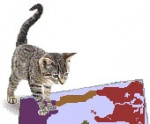

De: La Frikipedia, la enciclopedia extremadamente seria.
De: La Frikipedia, la enciclopedia extremadamente seria. De: La Frikipedia, la enciclopedia extremadamente seria.
| De la serie Países del planeta tierra: | |||||
| Gatonnya | |||||
|---|---|---|---|---|---|
| |||||
| Lema: ¡Hostias! | |||||
| Himno: Gato callejero
| |||||
| 
| |||||
| Capital | Gatusia | ||||
| Mayor ciudad | Bigotetes City | ||||
| Lenguas oficiales | Gatonio y español. | ||||
| Gobierno | Monarquía absoluta | ||||
| Rey Gatúbelo (Su Gatunez) | Isidoro | ||||
| Área | 51 | ||||
| Población | 25 millones de gatos | ||||
| Moneda | Leru | ||||
| Zona horaria | GTM San Andreas | ||||
| Dominio Internet | .ga | ||||
| Código telefónico | marcar 2 veces asterisco
| ||||
| participó en la Guerra Civil Española | |||||
También conocida como Systemcorp.
Gatonia es el producto resultante de dividir Koala Lumpur. Actualmente Gatonia está en guerra contra el Culo del Mundo, lugar donde vive el enemigo racial de todos los gatúbelos... El cruel y despiadado Alf.
El origen de Gatonia es algo confuso. Científicos de meteorito que cayó en la década de los 90 sobre suelo impracticable para jugar al furbo. Otra corriente de discusión, también procedente de Bilbao, nos dice que Gatonia podría ser la mismísima Atlantis, que ha resurgido enmedio de Europa, como un pasajero de autobús que busca su sitio entre la multitud, dando codazos. Lo que llevó a Gatonia, lógicamente, a la guerra. De hecho se calcula que durante la pasada década el país estaba inmerso simultáneamente en 4 guerras al mismo tiempo, entre la que se encuentra la Guerra Civil Española, en la que colaboraron mandando un soldado gatúbelo entrenado para matar a Franco.
Autor(es):